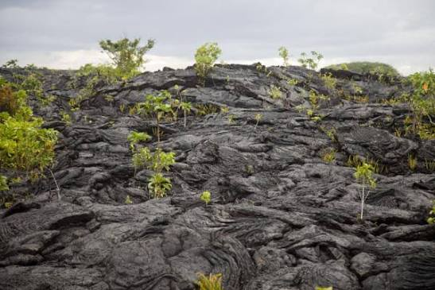

Saleaula Lava Fields
The first time I saw this field, I thought it looked very strange, like a huge pile of dried-up cow poop. When I later found out it was lava rocks, I became curious about the story behind it. Someone told me that when the volcano erupted there, many of the villagers moved to Upolu to a village called Le'auva'a.
